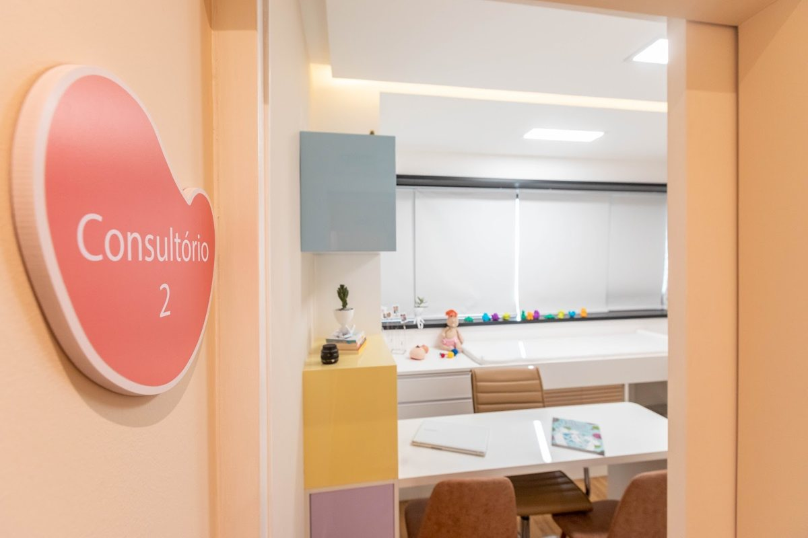
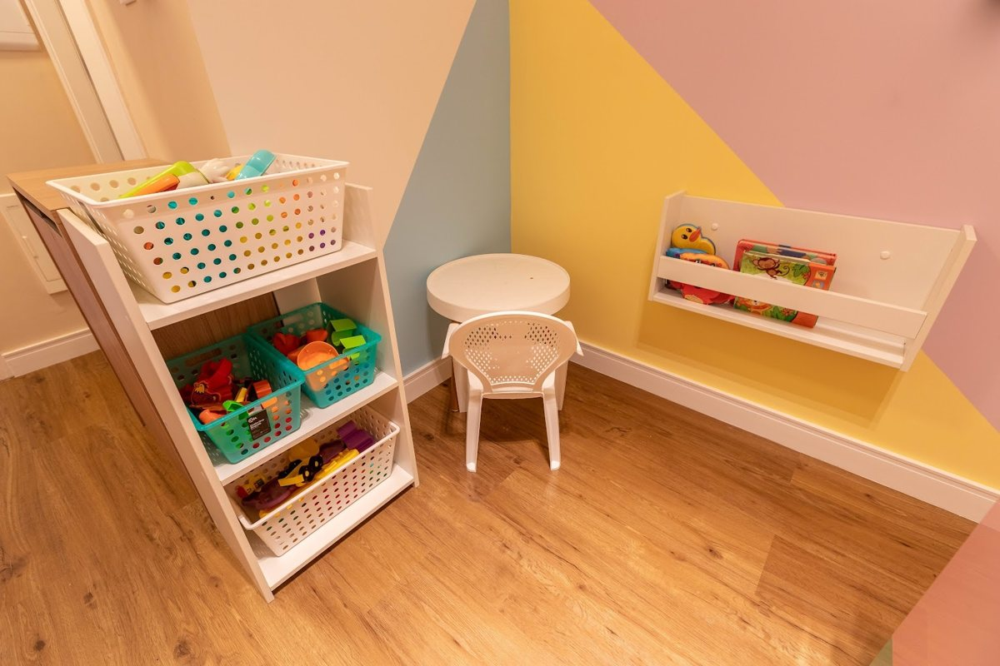

Início · Consultório e agendamento
Consultório e agendamento: sala 818B, na Paralela.
O consultório da Rayana Murta Pediatria fica no Wall Street Empresarial, na Avenida Paralela, em Salvador. O agendamento é pelo WhatsApp.
Onde fica
Endereço
Wall Street Empresarial (Ed. Wall Street West)
Av. Luís Viana Filho, 6462 · Torre B, sala 818B
Paralela · Salvador – BA · CEP 41730-101
Quando
Horário
Horário publicado na ficha do Google. Atendimento com hora marcada — confirme o dia e o horário pelo WhatsApp.
Agenda
Como agendar
- Mande uma mensagemPelo WhatsApp (71) 99999-6010, o mesmo do Linktree da Dra. Rayana.
- Combine o horárioDiga o motivo da consulta: pré-natal, primeira consulta, rotina ou check-up.
- Pergunte o que precisarConvênios, valores e documentos são confirmados no próprio WhatsApp.
Fotos
O espaço
Fotos publicadas na ficha do consultório no Google. A ficha também marca o consultório como espaço que acolhe a comunidade LGBTQ+.



Preparo
O que levar
- A Caderneta da Criança.
- Exames, receitas e relatórios recentes.
- Na consulta pré-natal, os exames da gestação.
- As dúvidas da família, anotadas.
Bebê com dificuldade para respirar, febre em bebê com menos de 3 meses, moleza intensa, manchas roxas sem motivo ou palidez súbita: procure o pronto-socorro mais próximo ou ligue para o SAMU (192). O WhatsApp do consultório não é canal de urgência.
Dúvidas frequentes
Perguntas comuns
Tem estacionamento?
Não confirmamos. Pergunte pelo WhatsApp ao agendar.
Atende plano de saúde?
Não confirmamos os convênios. Pergunte pelo WhatsApp ao agendar.
O WhatsApp atende urgências?
Não. Em urgência, procure o pronto-socorro mais próximo ou ligue para o SAMU (192).
Agende
Uma consulta com calma, para cuidar junto com você.
Consulta com hora marcada no consultório da Dra. Rayana: Wall Street Empresarial, Torre B, sala 818B, na Paralela. Fale pelo WhatsApp (71) 99999-6010.